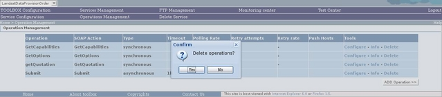

To delete an operation operation follow these steps.
Display the list of the Service operations available.
Click on the Delete link associated to the operation you want to delete. The browser should display

click on "Yes" to really delete the operation.